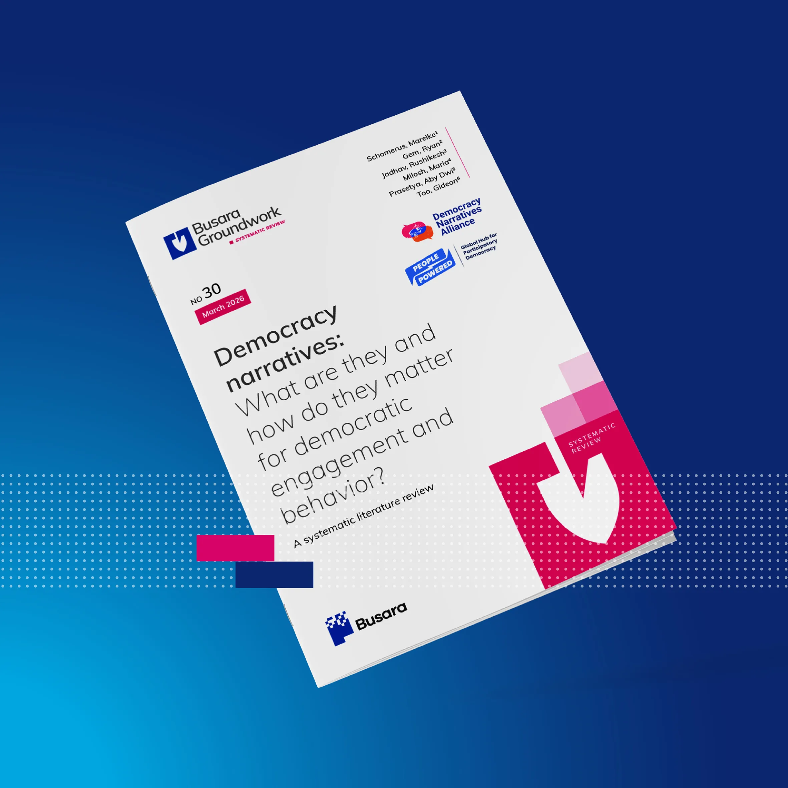
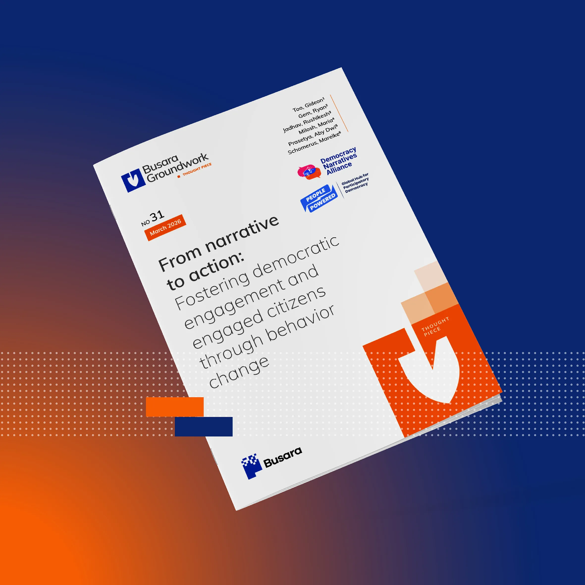

Reports and research syntheses

Impacts of Citizens’ Assemblies: A Summary of the Latest Research by People Powered
We collated scientific evidence on the effects of citizens' assemblies around the world and made it accessible and useful to practitioners, activists, and advocates in government and civil society. There's also a browsable collection of papers and illustrative cases, which will come in handy for democracy innovation practitioners.

Democracy narratives: what are they and how do they matter for democratic engagement and behavior?
A systematic review of peer-reviewed academic literature alongside gray literature produced by organizations working on democracy and social change. This report explores how people’s mental models, communication environments, and lived experiences influence whether they participate in democratic processes or disengage from them.

From narrative to action: fostering democratic engagement and engaged citizens
A thought piece examining how narratives about democracy translate into real democratic behavior and participation. Drawing on behavioral science, it frames democracy as a set of everyday actions carried out by citizens and institutions. Using the COM-B behavior change model, the report outlines how capability, opportunity, and motivation shape whether people engage in democratic practices.
Essays and commentary

Citizen assemblies will help save democracy
In this article I explore how citizen assemblies offer a promising response to the global crisis of representative democracy. It's written in Russian (with a pinch of hot takes on participation in autocracies). This topic is still on the margins of Russian-language discourse and I’d love to help change that.